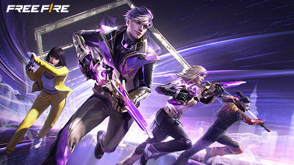

Royal Godswisdom Nta, popularly known as Royal, is a 16-year-old Nigerian boy with a passion for technology, programming, gaming, and artificial intelligence. He represents a new generation of young African innovators who are eager to learn, create, and use technology to bring their ideas to life.
Royal is curious, ambitious, and enthusiastic about exploring the digital world. With a strong interest in coding, gaming, and creative technology, he is working toward developing the skills needed to become a successful programmer and technology innovator.
A Passion for Programming and Technology
One of Royal's major interests is programming. Despite primarily using a smartphone to learn and build projects, he continues to explore different areas of software development.
He has worked with tools such as Acode, AIDE, SPCK Editor, and Termux, learning how to write code, build websites, understand programming commands, and develop applications.
One of his notable project ideas is Void Sensitivity, an application concept inspired by his interest in Free Fire. His vision is to create a tool that can help players generate personalized sensitivity settings based on their device specifications and playing styles.
Royal is also interested in developing websites, designing user interfaces, and creating practical digital solutions for businesses and individuals.
His journey reflects his belief that learning and creativity can help turn ideas into real projects, even when resources are limited.

A Dedicated Free Fire Gamer and Content Creator
Beyond programming, Royal has a strong passion for Garena Free Fire. He enjoys exploring gameplay techniques, sensitivity settings, movement mechanics, and ways to improve his performance.
His interests include:
- One-tap and headshot techniques.
- Movement styles and advanced gameplay mechanics.
- HUD customization and sensitivity optimization.
- Creating gaming content for TikTok.
- Building a recognizable gaming identity and community.
Royal is also interested in becoming a more active gaming content creator. Inspired by gaming creators and freestyle players, he hopes to develop his own style and share entertaining content with other players.
He understands that improving as a gamer and creator takes practice, creativity, patience, and consistency.
Exploring Artificial Intelligence and Automation
Royal's interests extend beyond gaming and traditional programming. He is also eager to learn about artificial intelligence and automation.
He wants to understand how AI works, how it can be used to create videos and digital content, and how automation can simplify tasks.
His curiosity about AI content creation reflects his desire to combine technology with creativity. He is exploring how artificial intelligence can help people produce engaging content, develop new skills, and discover opportunities in the digital economy.
For Royal, AI is not just something to watch from a distance; it is a field he wants to understand and eventually use to create useful things.
A Young Entrepreneurial Mindset
Royal also shows an interest in business and digital creativity. He has explored website design for businesses, including confectionery portfolios, product displays, customer feedback forms, and special-order features.
He is interested in how websites can help businesses present their products, connect with customers, and establish an online presence.
This combination of programming, design, and business interests gives him opportunities to explore different ways of turning his skills into practical projects.
Leadership and Community
Royal has also explored leadership through gaming communities, including his role as a Free Fire guild leader.
He is interested in working with others, developing a recognizable identity, and building communities around shared interests.
His involvement in programming and technology learning communities also reflects his interest in growing alongside other young people who share similar ambitions.
Overcoming Challenges Through Learning
Royal's learning journey has its challenges. He primarily relies on his smartphone for programming and creative projects, which means he has to find ways to work within the limitations of mobile devices.
Rather than allowing those limitations to define his ambitions, he continues to explore mobile-friendly tools and learn new techniques.
His journey highlights an important idea: you do not need to have everything figured out before you start learning and creating.
Every new project, experiment, and challenge can become an opportunity to gain experience.
His Vision for the Future
At just 16 years old, Royal is exploring several exciting fields:
Software Development
Building applications, websites, and practical software solutions.
Artificial Intelligence and Automation
Learning to use AI tools and automation to solve problems and create content.
Gaming and Digital Content Creation
Improving his gaming skills and developing his own creator identity.
Entrepreneurship and Innovation
Turning creative ideas and technical skills into useful projects.
His long-term ambitions are still developing, but his interests show a desire to explore the opportunities technology offers and build something of his own.
Conclusion
Royal Godswisdom Nta is a young Nigerian boy with a growing interest in programming, artificial intelligence, gaming, content creation, and entrepreneurship.
His story is one of curiosity, ambition, and learning. From experimenting with code on a smartphone to developing application ideas and exploring the world of AI, Royal is taking steps toward a future shaped by technology and creativity.
At 16, he is still at the beginning of his journey, with plenty of opportunities to learn, experiment, and grow.
His story is not just about what he has learned so far, but also about what he is determined to discover and create next.